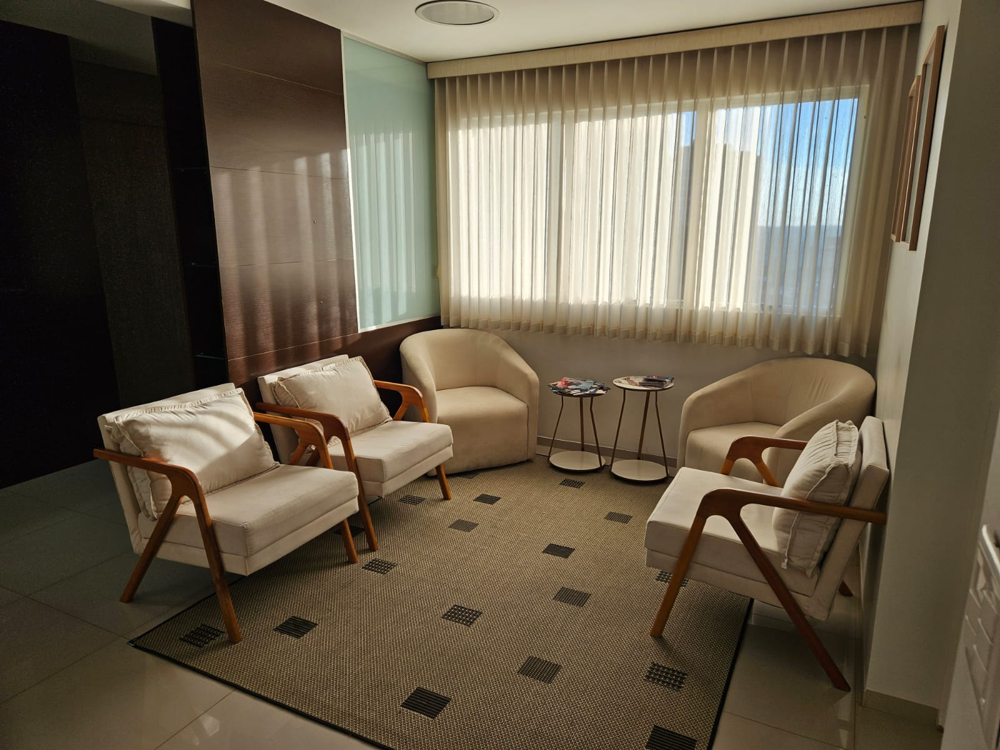
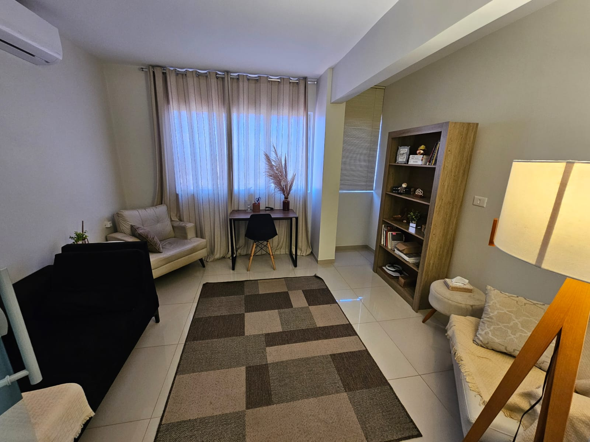

Psicoterapia Comportamental e Avaliação Neuropsicológica com acolhimento, ciência e resultados. Comece sua jornada de transformação.
CRP 08/30182 · Psicóloga Comportamental
Formação
FAP Apucarana
Pensamentos acelerados, aperto no peito, preocupações que não te deixam dormir e atrapalham cada momento do seu dia.
Um peso emocional que não passa, falta de energia, desmotivação e a sensação de que a vida perdeu a cor.
Relacionamentos que terminam igual, reações desproporcionais, escolhas que você sabe que não são boas — mas continua fazendo.
Dificuldade de concentração, esquecimentos frequentes, ou a necessidade de entender como sua mente funciona através de uma avaliação.
Se você se identificou, saiba:
Buscar ajuda é um ato de coragem.

Sou Psicóloga (CRP 08/30182) graduada pela FAP Apucarana, com Pós Graduação em Terapia Analítico Comportamental pela Unifil Londrina e Pós Graduação em Neuropsicologia pela PUC Goiás.
Ao longo de mais de 6 anos de experiência e + de 200 pacientes atendidos, venho dedicando minha carreira a oferecer um acolhimento humanizado e embasado cientificamente.
Acredito que cada pessoa carrega uma história única — e merece um espaço seguro para ressignificá-la. No meu consultório, você encontra escuta ativa, técnicas baseadas na Análise do Comportamento e o acolhimento necessário para iniciar sua transformação.
Localizada na região central de Apucarana/PR, preparamos um espaço aconchegante para que você seja acolhido(a) de maneira humanizada, sem julgamentos.


Para casos em que se torne necessário, trabalho em conjunto com a psiquiatra Beatriz Cheregati Fumagalli CRM PR 52853.
O trabalho multiprofissional é efetivo porque cuida de maneira ampla, ajustando o funcionamento biológico e a parte psicossocial (nossas emoções e os acontecimentos da nossa vida).
Você já considerou que talvez esteja em sofrimento devido a relação com outras pessoas que também precisem de psicoterapia? Isso é muito comum. Meu trabalho envolve sessões individuais baseadas na Análise do Comportamento, uma abordagem eficaz e com evidência científica. Juntos, vamos cuidar de seu sofrimento e identificar quais mudanças podem ser bem-vindas para que você tenha mais qualidade de vida e consiga lidar com o que tem ao seu redor.
Avaliação do funcionamento do cérebro, para apoiar diagnósticos médicos e auxiliar na construção de um prognóstico adequado para sua reabilitação cognitiva. Útil para avaliação de:
Clique no botão do WhatsApp e envie uma mensagem. Respondo pessoalmente em até 24 horas.
Na primeira sessão, conversamos sobre o que te trouxe até aqui. É um espaço seguro, sem julgamentos.
Juntos, traçamos um plano terapêutico personalizado para que você conquiste mais qualidade de vida.
A Gabriela mudou minha forma de enxergar a vida. Eu vivia presa em ciclos de ansiedade e hoje consigo lidar com as situações de um jeito que nunca imaginei. Sou muito grata por cada sessão.
Marina S.
Paciente há 2 anos
Trabalho em parceria com a Gabriela há algum tempo e sua competência técnica na Análise do Comportamento é indiscutível. Seus pacientes apresentam uma evolução consistente, fruto de um olhar humano e baseado em evidências.
Dra. Beatriz Fumagalli
Médica Psiquiatra · Parceira
Meu filho fez a avaliação neuropsicológica com a Gabriela e foi divisor de águas. O laudo foi detalhado, humano e nos deu clareza para as próximas decisões. A escola também elogiou muito.
Camila A.
Mãe de paciente
É um processo de análise conduzido por um psicólogo, que fez faculdade de Psicologia. Acredite, isso faz bastante diferença, pois não se pode confiar seu sofrimento à um “especialista” que não tenha o preparo adequado.
É uma avaliação feita por psicólogos ou fonoaudiólogos. Ela é diferente do acompanhamento psicoterápico comum. É utilizada para apoiar diagnósticos médicos (normalmente solicitados por neurologistas ou psiquiatras) e avalia a relação do funcionamento do cérebro com o comportamento. Na avaliação psicológica são utilizados vários testes para avaliar de forma prática as habilidades e dificuldades de cada um. É um processo personalizado, montado especificamente a partir da situação de cada pessoa. Costuma levar de 6 a 10 sessões, com duração de 1 hora à 1 hora e 30 minutos.
Psicólogo é coisa de gente! Todo mundo pode precisar de psicólogo em algum momento da vida. Buscamos essa ajuda quando estamos lidando com sofrimento que nos atrapalha no dia a dia de maneira incômoda, em ambiente profissional, familiar, conjugal e afins.
Trabalhamos com o sofrimento humano de forma geral. Algumas pessoas tem diagnósticos fechados e buscam por ajuda, mas o fato é que: todos sofremos! O psicólogo auxilia em autoconhecimento, autoestima, comportamentos impulsivos, pensamentos negativos, tomada de decisões, estabilidade emocional, sono e redução de sintomas ansiosos/depressivos/compulsivos.
Busque um profissional com boa formação acadêmica, que se mostre humano, atualizado, que seja recomendado por pessoas relacionadas da área e que tenha formação em Psicologia.
Atendo em ambas as modalidades, com horário agendado. A avaliação neuropsicológica pode demandar atendimentos presencias, dependendo de cada caso.
Em psicoterapia pode-se optar por frequência semanal ou quinzenal. Normalmente avaliamos isso juntos no primeiro encontro, considerando as demandas trazidas, disponibilidade de horários e custos do processo. Independente da frequência, as sessões duram 50 minutos.
Essa resposta não é padrão. Lidaremos com os motivos que te levou a buscar acompanhamento. No meio desse processo, outras demandas podem surgir e te fazer estender o acompanhamento, ou você pode optar por encerrar o processo.
Total. Quebras de sigilo são necessárias apenas naquilo que o Conselho Federal de Psicologia determina: quando a integridade da vida humana está prejudicada (violências severas, ideação suicida/homicida e afins) e depoimento em juízo. Em todas as ocasiões citadas, apenas as informações imprescindíveis são informadas à terceiros.
Não. Apesar de muitas vezes ser recomendado pelo profissional da medicina, tanto a psicoterapia quanto à avaliação neuropsicológica não demandam encaminhamento, você pode fazer essa busca de maneira espontânea, até mesmo para avaliar junto da psicóloga se é necessário ajuda médica.
O profissional de psiquiatria tem formação em Medicina e sua conduta normalmente envolve o uso de medicações. O profissional da Psicologia não prescreve medicações, utiliza do diálogo para formular análises e construir estratégias junto da pessoa acompanhada. Costuma-se dizer que nem toda pessoa acompanhada em Psicoterapia precisa de intervenção médica. Contudo, boa parte das pessoas que precisam de ajuda médica psiquiátrica, são beneficiadas com a psicoterapia, porque buscar ajuda farmacológica sinaliza que o grau de sofrimento está significativo. Trabalho com uma psiquiatra parceira, e caso seja do interesse da pessoa acompanhada, faço encaminhamento para ela, se necessário.
Não, apenas de forma particular. É emitido nota fiscal para todos os atendimentos, assim como a elaboração de relatórios e declarações necessários para pedido de reembolso no plano.
Seja presencialmente em Apucarana ou online de qualquer lugar do mundo,
estou aqui para te ouvir e construir novos caminhos.